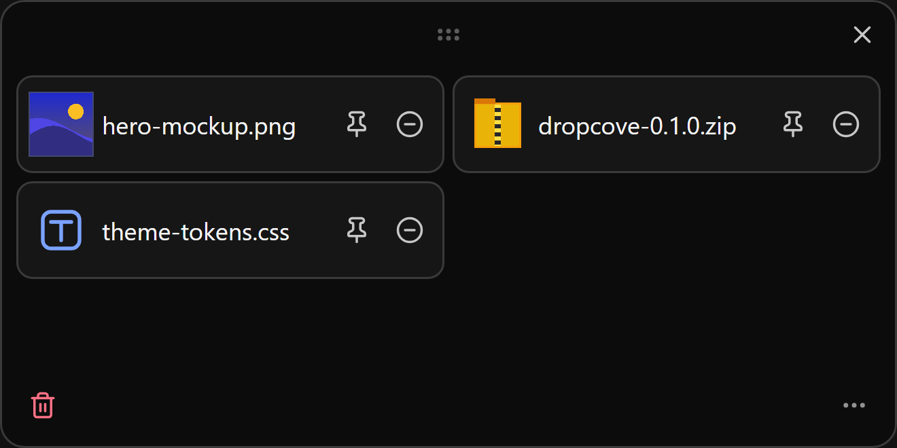
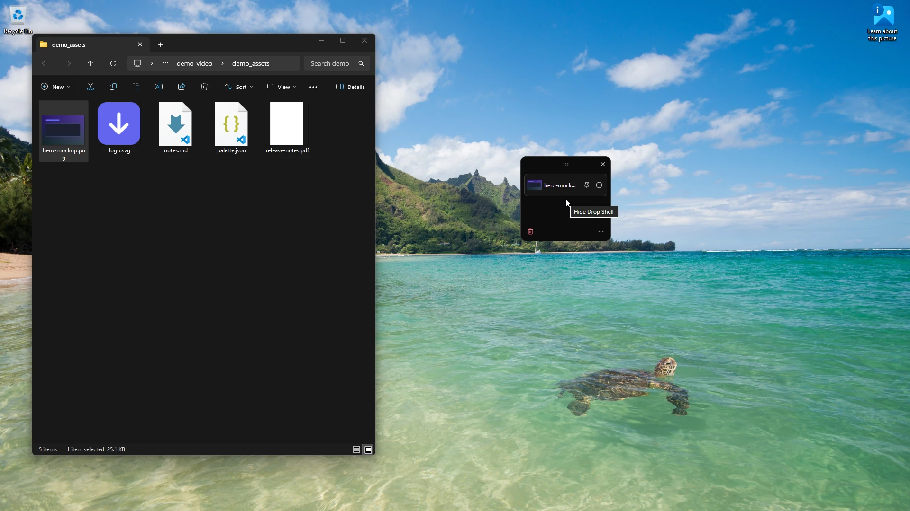
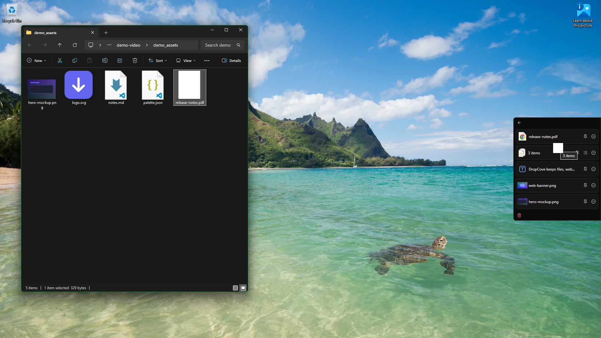
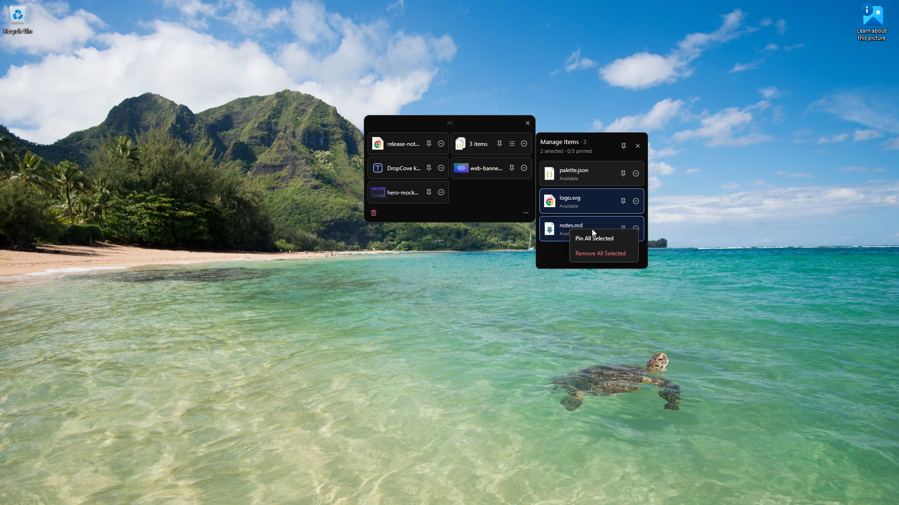
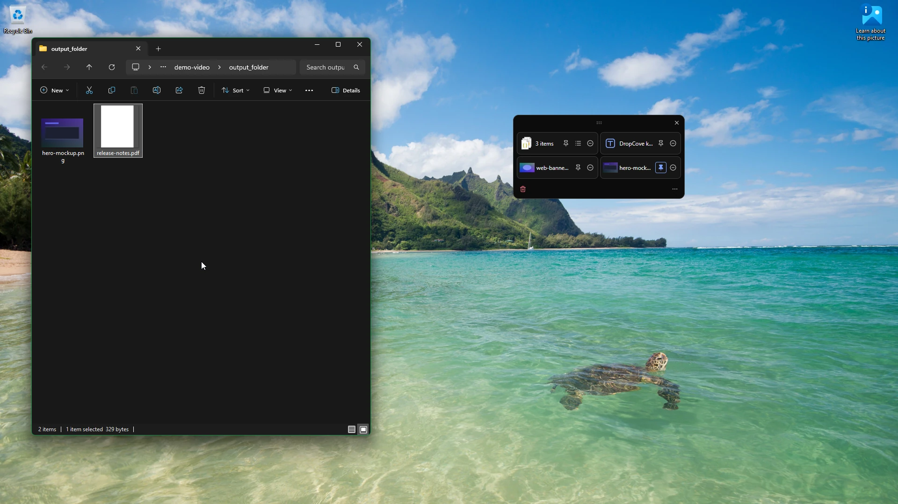
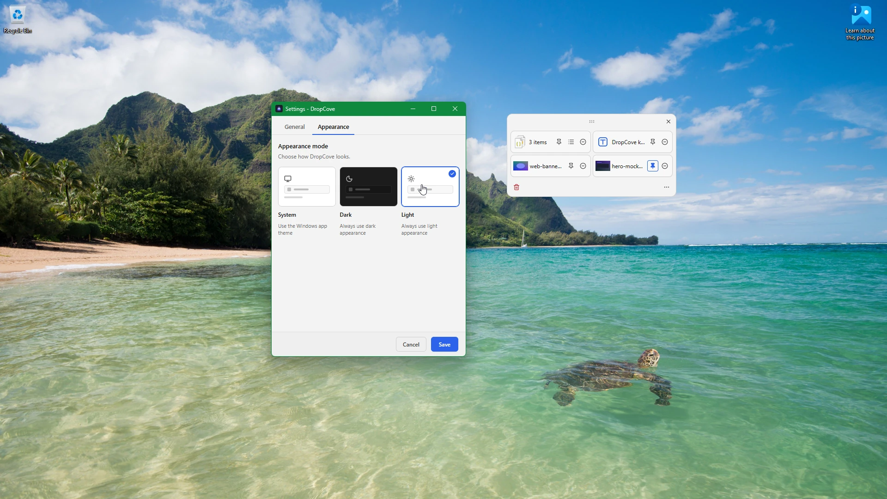

A floating shelf for files in transit on Windows 11.
Stash files, web images, or text snippets on a floating shelf while switching windows, then drag them out where you need them.
Built for Windows 11 (x64). DropCove holds items temporarily without moving, renaming, or touching your original files.

Features
- Collect anything you drag
- Drop files from Explorer, images straight from Edge or Chrome, or selected text. Every drop stays neatly grouped on the shelf.
- Shake to summon, tuck to the edge
- Shake your mouse while dragging to bring up the shelf, or use a hotkey. If you dismiss it with items waiting, it docks quietly to your screen edge without interrupting focus.
- Drag out together or item by item
- Move a whole batch into place with one drop, select several batches at once, or open Manage Items to pick individual files in order.
- Clears on drop, or pin to keep
- Items clear off the shelf once you drop them into place. Pin anything you reuse often, and DropCove keeps it ready across reboots.
Visual tour





How it works
-
Install DropCove
Download and run the installer. Installs per user without administrator elevation.
-
Drop items on the shelf
Shake your mouse while dragging, press a hotkey, or click the edge rail to open the shelf. Drop in files, folders, web images, or text snippets.
-
Switch apps and drag out
Open your destination folder, email, or chat, then drag items out. Dropped items clear automatically, while pinned items stay ready.
Requirements and updates
- Operating system
- Windows 11, build 22000 or later (x64).
- Runtime prerequisite
- Microsoft Visual C++ Redistributable (x64).
- Install steps
- Download and run the installer.
- Updates
- Checks for updates only when you click Check for updates in About. No background network polling, and updates install cleanly over the running app.